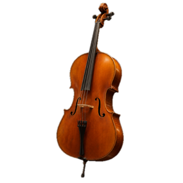
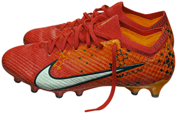

曾经的理想
12岁之前，大提琴几乎占满了我的时间。我曾经想成为一名职业大提琴演奏家，也想考进音乐附中。
后来，我发现自己的能力和当时的条件还不足以支撑这条路。同时，我也找到了更想做的事，于是放下了这个目标。
我发现，自己更喜欢创造一些东西，让别人感到幸福。现在，我想走向工业设计和产品设计。

12岁之前，大提琴几乎占满了我的时间。我曾经想成为一名职业大提琴演奏家，也想考进音乐附中。
后来，我发现自己的能力和当时的条件还不足以支撑这条路。同时，我也找到了更想做的事，于是放下了这个目标。
我发现，自己更喜欢创造一些东西，让别人感到幸福。现在，我想走向工业设计和产品设计。

这是我自己买的第一双真心觉得好看的足球鞋。当时没有想太多，只觉得它很帅。
它陪我度过了很难踢上球的那两年。在学校，我很难和身边的人合得来，也遭遇了队友的排斥。我没有参加过任何一场校队比赛，连娱乐比赛也很少有机会加入。
穿了一年多后，鞋底坏了。我专门找了一个能发光的鞋柜，把它收藏起来。
鞋底坏了，这双鞋却被我留了下来。
去探月之前，原来的电脑已经不够用，难以完成学校里的各项事务。我向父亲要了这台苹果电脑。
一位很擅长这方面的学长，教我购买 API、订阅 AI 工具，也带我学会用 AI 做网页。
第一次尝试 vibe coding，我用 DeepSeek 的 API 做了一个小游戏。这件事颠覆了我当时的认知，也让我开始了解互联网和 AI。
从使用电脑，到尝试创造自己的东西。